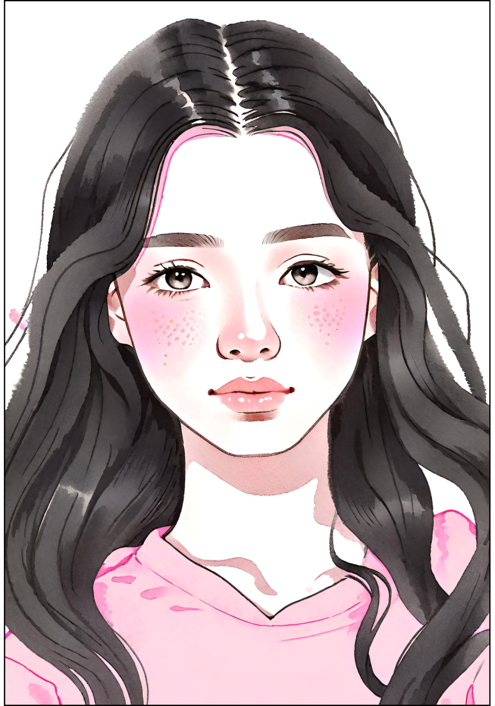
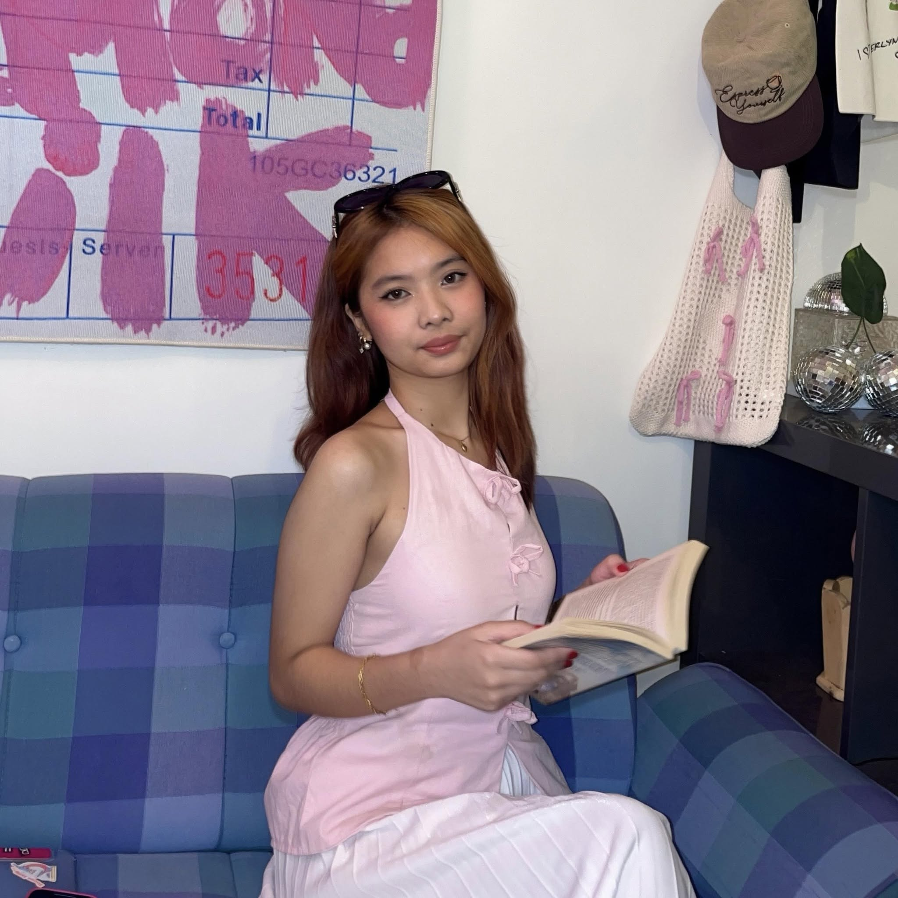
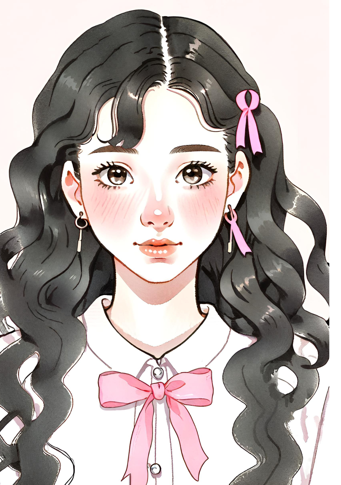
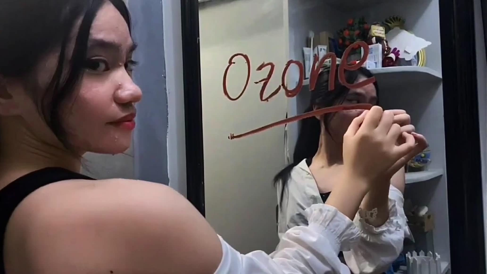

Grace & Elegance
A digital self-portrait where I combined anime elements with watercolor digital painting. I experimented with colors and style to represent myself.
Multimedia, stories, and creative things.

Hi! I'm Kyla, a Multimedia Studies student at the University of the Philippines Open University. I'm interested in how media, technology, and storytelling shape the way people express themselves and connect with others.
I enjoy exploring creative ideas, analyzing films and visual media, and learning how digital tools can bring a message to life. I'm still learning and growing, and I like finding inspiration in everyday experiences, books, and the stories people share.
These are three of my favorite creative works from 2024.

A digital self-portrait where I combined anime elements with watercolor digital painting. I experimented with colors and style to represent myself.

A digital portrait of a girly girl in pink with wavy hair. She represents someone I resonate with.

This music video is inspired by the fire tragedy that happened at the Ozone Disco Club in 1996. This tragedy is recognized as the worst fire in Philippine history. It was a result of negligence and disregard for safety regulations. The music video implicitly critiques societal disregard for safety measures and the consequences of prioritizing profit over human well-being.
View my project list in XML format.
Phone: 0992 032 1373
Email: mbgaurana@up.edu.ph